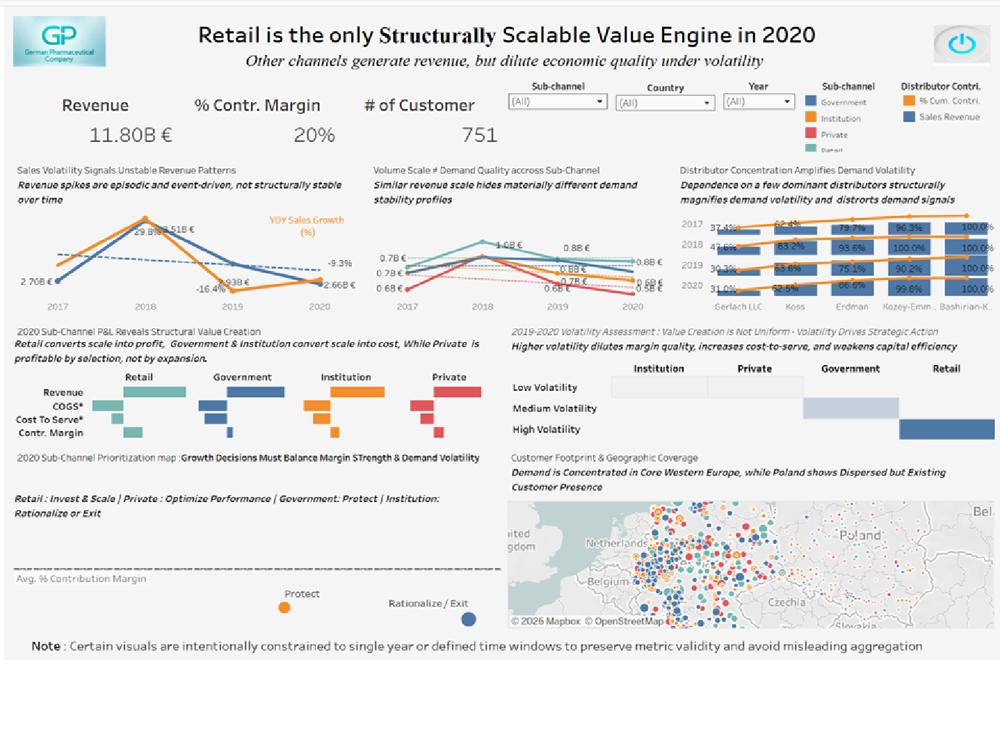

Hi,
I'm Mely Horman
Finance & Data
Analytics Leader
Turning Financial and Operational data into Strategic Insights
through Analytics, BI dashboards, and Profitability-focused performance Analysis
About

Mely Horman
Finance and business analytics professional with deep expertise in Financial Planning & Analysis (FP&A) and performance management. I translate complex financial and operational data into actionable business insights through Excel-based analysis and BI dashboards. My work focuses on uncovering profitability drivers, improving performance visibility, and supporting data-driven decision-making. I primarily use Excel and BI tools, with working knowledge of SQL and Python to support data analysis and reporting.
Skills
Professional Skills
Financial Planning & Analysis
90%
Business Intelligence & Reporting
90%
Advanced Excel & Tableau
90%
SQL & Power BI (Working Knowledge)
65%

My Project

Sub-channel Structural Value Engine Analysis
Project Summary
- Reframed growth decisions from revenue scale to economic and demand quality.
- Rebuilt sub-channel P&L to isolate structural performance from volatility-driven noise.
Scope & Achievements
- Analyzed multi-year sales volatility and demand patterns.
- Rebuilt contribution margin using COGS and activity-based cost-to-serve (ABC).
- Identified structural value engines versus value diluters.
- Translated insights into scale / optimize / protect / exit decisions, including Poland re-entry go/no-go.
Tools & Method
- Python (Google Colab)
- Activity-Based Costing (ABC)
- Tableau executive dashboards
Strategic Recommendation
- Scale structurally stable Retail.
- Defend Government cash flows.
- Optimize (not scale) Private.
- Exit value-dilutive Institution accounts.
- Validate expansion via a disciplined Poland pilot.